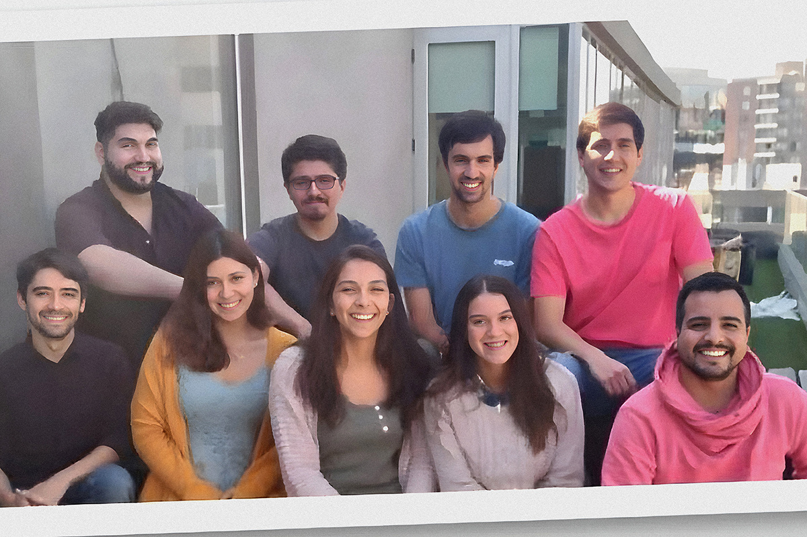

Todo empezó con unas prácticas
Ahora lidera un equipo
Ahora lidera un equipo

¿Sabían que en Compara un 63% de las personas que trabajan son mujeres?
Una de ellas es Andrea Trujillo, Ingeniera Comercial y actualmente Product Manager. Pero sus inicios en Compara fueron a través de unas prácticas cuando tenía 22 años.
Aún no terminaba mi carrera universitaria. Mi idea fue estar solo los 3 meses que duraba mi práctica y que cuando se terminara buscar otro lugar para hacer mi práctica profesional, que tenía una duración de 6 meses.
Los planes de Andrea comenzaron bien, sus 3 meses los cumplió, pero cuando debía irse a otro lugar no pudo hacerlo
Encontré en Compara, una empresa con una muy buena cultura, buenos beneficios, un trabajo muy desafiante y entretenido, y también un espacio donde podía aprender y crecer mucho, lo que hizo muy difícil que quisiera irme a otra empresa a hacer mi siguiente práctica.
Como saben, no todo es lineal. Los inicios de Andrea fueron en Marketing, como analista de performance. Luego de terminada sus prácticas pasó al equipo de producto como Product Manager.
Mi principal miedo era que no sabía nada de código, pero todos me tranquilizaron que no era necesario tener ese conocimiento. He tenido la fortuna de trabajar con personas muy talentosas en Compara, que me guiaron en ese proceso de aprendizaje. Afortunadamente, en Compara si existe la meritocracia y eso me ha permitido rodearme de puro talento.
En la actualidad, Andrea lidera el equipo de CRM, en donde son 3 mujeres. Un 63% de los trabajadores de Compara son mujeres, lo que en otras empresas de tecnología es muy difícil de encontrar.
Andrea puede hablar de muchas cosas, imagínense que está hace 6 años con nosotros, pero resaltó algo que ya les hemos dicho y nos encanta repetir:
He vivido la evolución de Compara en estos años, sin embargo, a pesar de todos los cambios, avances y evoluciones, la cultura y valores de Compara siguen siendo los mismos por los cuales me decidí quedar después de mi primera práctica. La esencia de Compara es la misma y eso es lo que lo hace único.
Somos fan de esta historia por dos motivos:
1- Nos gusta ver crecer a nuestros comparadores y todo lo que han pasado en este tiempo. Un timelapse de progresos.
2- Nuestra cultura es algo que todos aman y nos enorgullece mucho.
Nos leemos próximamente en otro post.
 Actualidad
ActualidadEl recordado programa noventero “Venga Conmigo” marcó a toda una generación en Chile. Su exitoso segmento “Corazones Service” se transformó…
 Actualidad
ActualidadHace aproximadamente 2 meses comenzamos con el cierre de lo que empezó en julio como el “Compariniverse”.
 Actualidad
ActualidadHace unos meses lanzamos Compariniverse: la primera campaña en Chile protagonizada por una celebridad completamente clonada con IA.